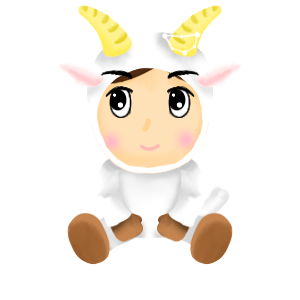

염소자리(Capricorn)
12월 22일~1월 19일

염소자리는 궁수자리의 동쪽, 물병자리의 남쪽에 위치하는 가을철 남쪽하늘의 별자리입니다.
그리스신화에서 가축의 신 '판'이 거인 족 티폰을 피하려고 변신을 서두르다가 상반신은 염소로 하반신은 물고기의 모습으로 변했다.
믿거나 말거나, 염소자리는 경솔하거나 변덕스럽지 않으며 책임을 진지하게 받아들이고 집과 가족을 우선순위의 맨 위에 놓습니다.